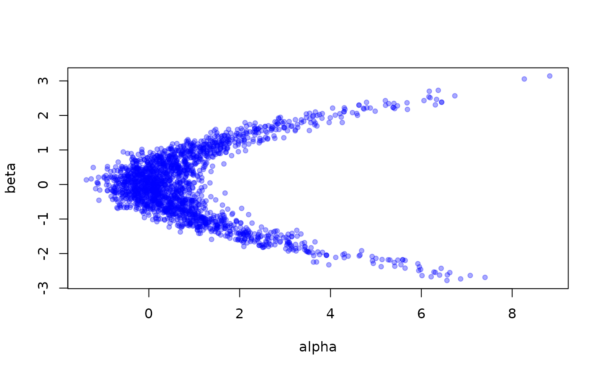

Sample from a model. Uses a Monte Carlo method (or possibly something else in future) to generate samples from your distribution. This is going to change a lot in future, as we add support for distributing over workers, and for things like parallel reproducible streams of random numbers. For now it just runs a single chain as a proof of concept.
Usage
monty_sample(
model,
sampler,
n_steps,
initial = NULL,
n_chains = 1L,
runner = NULL,
restartable = FALSE,
burnin = NULL,
thinning_factor = NULL
)Arguments
- model
The model to sample from; this should be a
monty_modelfor now, but we might change this in future to test to see if things match an interface rather than a particular class attribute.- sampler
A sampler to use. These will be described later, but we hope to make these reasonably easy to implement so that we can try out different sampling ideas. For now, the only sampler implemented is
monty_sampler_random_walk().- n_steps
The number of steps to run the sampler for.
- initial
Optionally, initial parameter values for the sampling. If not given, we sample from the model (or its prior). Alternatively, you can provide a
monty_samplesobject here – the result of a previous call to this function – and we will sample some starting points from the final portion of the chains (the exact details here are subject to change, but we'll sample from the last 20 points or 5% of the chain, which ever smaller, with replacement, pooled across all chains in the previous sample).- n_chains
Number of chains to run. The default is to run a single chain, but you will likely want to run more.
- runner
A runner for your chains. The default option is to run chains in series (via monty_runner_serial). The only other current option is monty_runner_parallel which uses the
parallelpackage to run chains in parallel. If you only run one chain then this argument is best left alone.- restartable
Logical, indicating if the chains should be restartable. This will add additional data to the chains object.
- burnin
Number of steps to discard as burnin. This affects only the recording of steps as your chains run; we don't record the first
burninsteps. Generally you would want to do this in post-processing withmonty_samples_thin()as this data is discarded with no chance of getting it back. However, if your observation process creates a large amount of data, then you may prefer to apply a burnin here to reduce how much memory is used.- thinning_factor
A thinning factor to apply while the chain is running. If given, then we save every
thinning_factor'th step. So ifthinning_factor = 2we save every second step, and if 10, we'd save every 10th. Likeburninabove, it is preferable to apply this in post processing withmonty_samples_thin(). However, for slow-mixing chains that have a large observer output you can use this to reduce the memory usage. Use ofthinning_factorrequires thatn_stepsis an even multiple ofthinning_factor; so ifthinning_factoris 10, thenn_stepsmust be a multiple of 10. This ensures that the last step is in the sample. The thinning factor cannot be changed when continuing a chain.
Value
A list of parameters and densities. We provide conversion to formats used by other packages, notably posterior::as_draws_array, posterior::as_draws_df and coda::as.mcmc.list; please let us know if you need conversion to something else. If you want to work directly with the output, the elements in the list include:
pars: An array with three dimensions representing (in turn) parameter, sample and chain, so thatpars[i, j, k]is theith parameter from thejth sample from thekth chain. The rows will be named with the names of the parameters, from your model.density: A matrix of model log densities, withn_stepsrows andn_chainscolumns.initial: A record of the initial conditions, a matrix with as many rows as you have parameters andn_chainscolumns (this is the same format as the matrix form of theinitialinput parameter)details: Additional details reported by the sampler; this will be a list of lengthn_chains(orNULL) and the details depend on the sampler. This one is subject to change.observations: Additional details reported by the model. This one is also subject to change.
Examples
m <- monty_example("banana")
s <- monty_sampler_hmc(epsilon = 0.1, n_integration_steps = 10)
samples <- monty_sample(m, s, 2000)
# Quick conversion of parameters into something plottable:
pars <- t(drop(samples$pars))
plot(pars, pch = 19, cex = 0.75, col = "#0000ff55")

# If you have the posterior package you might prefer converting to
# its format for performing diagnoses:
res <- posterior::as_draws_df(samples)
posterior::summarise_draws(res)
#> # A tibble: 2 × 10
#> variable mean median sd mad q5 q95 rhat ess_bulk ess_tail
#> <chr> <dbl> <dbl> <dbl> <dbl> <dbl> <dbl> <dbl> <dbl> <dbl>
#> 1 alpha 0.934 0.604 1.37 0.931 -0.534 3.65 1.01 238. 154.
#> 2 beta -0.0349 -0.0404 0.975 0.944 -1.65 1.61 1.03 110. 137.
# At this point you could also use the 'bayesplot' package to plot
# diagnostics.